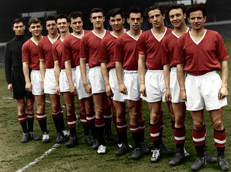
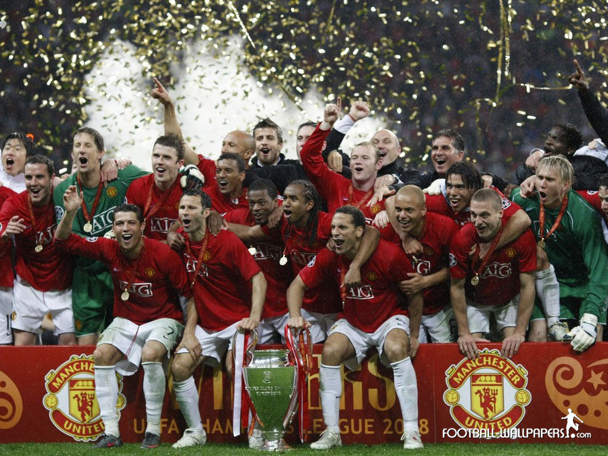

Manchester United je engleski nogometni klub koji svoje domaće utakmice igra na stadionu Old Trafford u Manchesteru. Jedan je od najuspješnijih engleskih i europskih nogometnih klubova sa 20 naslova prvaka, 12 pobjeda u engleskom kupu i tri naslova europskih prvaka.
Klub je u svojoj historiji imao dva izuzetno uspješna razdoblja, oba pod vodstvom škotskih trenera: 1950.-ih i 1960.-ih pod upravom Matta Busbyja te 1990.-ih i 2000.-ih pod Alexom Fergusonom. Prvo razdoblje uspjeha prekinuto je avionskom nesrećom 1958. godine u Münchenu u kojoj je poginulo 23 ljudi od toga 8 igrača i 3 klupska dužnosnika, dok su neki od igrača zbog ozljeda zauvijek završili karijeru. Ipak, klub se uspio oporaviti od te tragedije. Nakon Busbyjeva odlaska iz kluba 1969. uslijedilo je razdoblje lošijih rezultata, koje je kulminiralo ispadanjem iz prve lige godine 1974. Klub se u prvoj drugoligaškoj sezoni uspio vratiti u prvu ligu, ali nove je uspjehe počeo nizati tek s Fergusonovim dolaskom na mjesto trenera.


Izađi